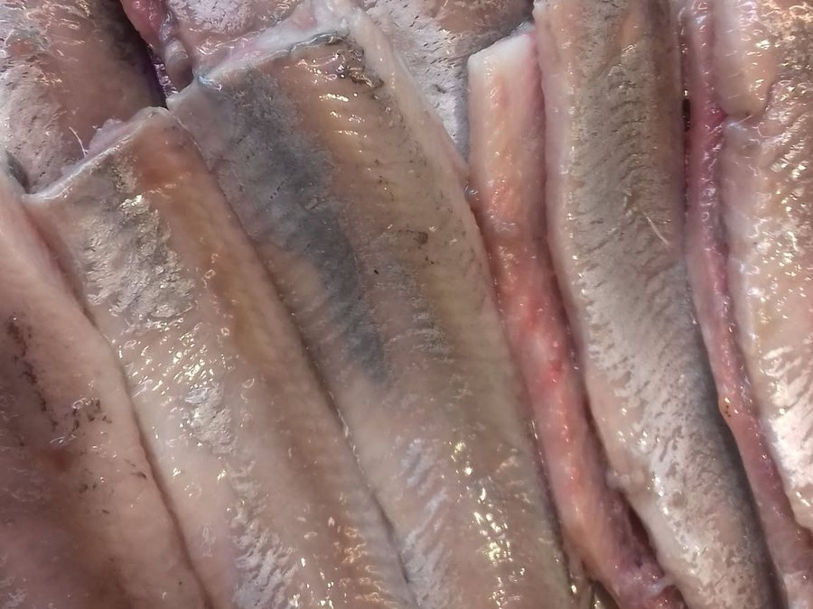
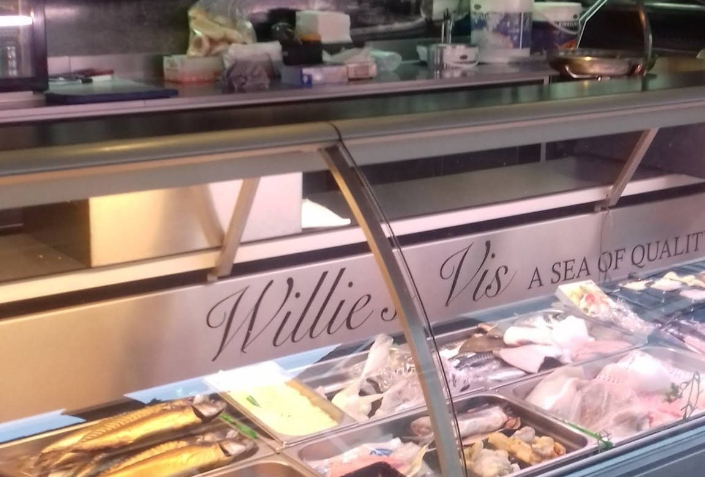
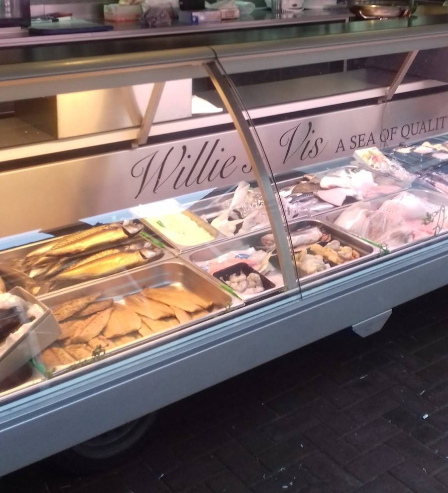
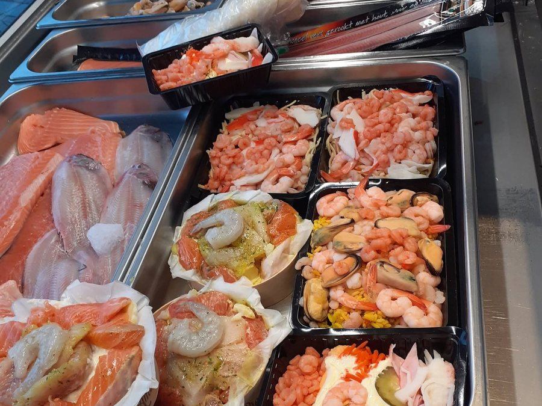
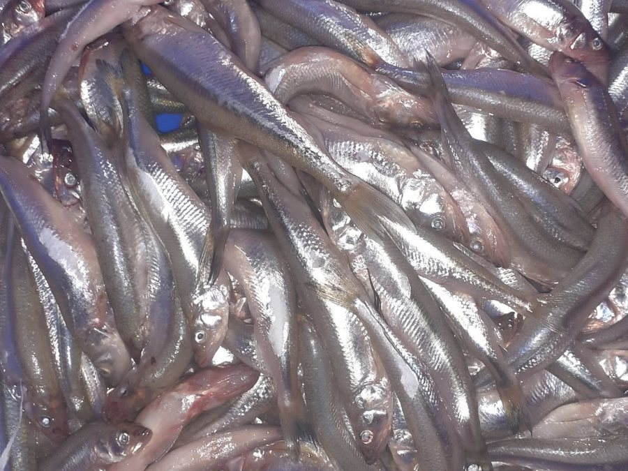

Haring
Schoongemaakt en klaar om te eten. Even langs de wagen op de markt.


Zes dagen per week staan we met de viswagen in West-Brabant: in Zevenbergen, Fijnaart, Dongen, Made en Teteringen. Haring, verse vis, gerookte vis en schotels, en vooraf bestellen kan ook.
Elke week op dezelfde vaste plekken. Kom langs, of bestel vooraf en haal het op bij de wagen.
Staan we een keer ergens anders, bijvoorbeeld bij de wielerronde, dan melden we dat op Facebook.
Een greep uit wat er bij de wagen ligt. Twijfelt u wat u vanavond maakt? Vraag het gerust.

Schoongemaakt en klaar om te eten. Even langs de wagen op de markt.

Zalm, garnalen, mosselen en kant-en-klare schaaltjes. Ook om te bestellen voor de feestdagen.

Elke marktdag in de vitrine. Wat er ligt, verschilt per week.
★★★★★"Vandaag (zaterdag 28 nov.) bij Willie's Vis in Zevenbergen, een stoofpotje zalm gekocht. Vanavond bereid zoals was aangegeven en ik moet zeggen is een aanrader. Was super lekker."
Bert Tijssenvia Facebook
★★★★★"Heerlijke vis en service"
Maggy De Bievia Facebook
★★★★★"Smoked eel, actually everything! Very friendly staff."
Peter Maundervia Facebook
A sea of quality
Willie's Vis is een viswagen uit Prinsenbeek. Elke week rijden we dezelfde markten af, zodat u weet waar en wanneer u ons vindt.
Bij de wagen hoort u wat er vandaag lekker is en hoe u het klaarmaakt.
Wilt u zeker zijn van uw vis, of bestelt u voor een feestje of de kerst? Geef het vooraf door.
Op 06 55 96 08 82, of vul het formulier in.
Zeg wat u wilt en op welke markt u het ophaalt.
Uw bestelling ligt voor u klaar.
Bel of app gerust, ook als u wilt weten wat er vandaag ligt.